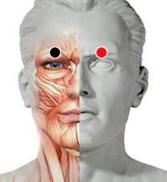

Sincicial respiratorio v.
Par
ceja - ceja

Generalidades:
VIrus común que ocasiona problemas respiratorios con síntomas como: tos, rinorea, congestión nasal, estornudo, odinofagia.
En adultos y jóvenes se presenta con síntomas leves, más peligroso en bebés y niños pequeños con síntomas como: disnea, cianosis, respiración rápida, sibilancias.
Transmisión
Se dispersa a través de pequeñas gotas de saliva (aérea) y fluidos corporales. Más común en guarderías, en condiciones de hacinamiento.